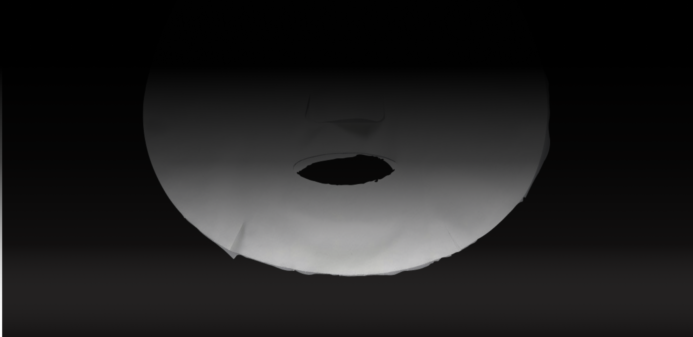

Object(ive) Intimacy
CRITICAL INQUIRY AND VISUAL RESEARCH
The goal of a visual archive is to explore the relationship between form and content: How is meaning constructed and communicated through visual language? Through observing, collectin, analyzing, writing, and form making, our task is to apply design processes involving visual research, concept generation, and craft skills.
THE MASK

Object(ive) Intimacy is an archive documenting the relationship between object and owner. This collection displays 100 personal belongings embedded with physical traces of myself, sharing the candid stories of journeys taken together. The intention of this archive is to investigate how objects become an extension of identity.
SPREADS
Here are a few sample spreads from my archive.